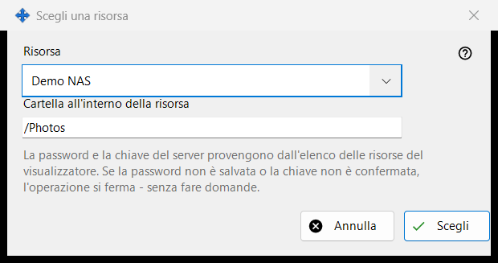
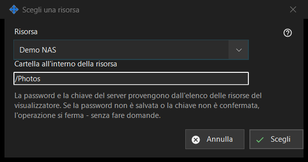

Scegli una risorsa
Scopo
Sceglie una risorsa dall'elenco delle risorse del visualizzatore come origine o destinazione di un'operazione pianificata. Si apre da «Risorsa..» accanto a Origine o Destinazione nella finestra dell'operazione pianificata.


In questo ordine
- Scegli la risorsa nell'elenco «Risorsa».
- Controlla o cambia «Cartella all'interno della risorsa»; inizialmente è la cartella radice della risorsa.
- Premi «Scegli». «Annulla» mantiene la posizione precedente.
Gli elementi
Elenco delle risorse
Vengono offerti solo i server SFTP e le cartelle di rete dell'elenco del visualizzatore, ordinati per nome; le risorse di altri tipi non compaiono. Se non ce ne sono, la finestra dice: «Nell'elenco delle risorse non ci sono risorse adatte. Aggiungi un server SFTP o una cartella di rete nel visualizzatore.» e «Scegli» resta disattivato. Aggiungere una risorsa o riconfermarne l'attendibilità si fa nel visualizzatore; questa finestra non stabilisce alcuna connessione.
Cartella all'interno della risorsa
La cartella deve trovarsi all'interno della radice della risorsa scelta, altrimenti «Salva» nella finestra dell'operazione la rifiuta. Scegliere un'altra risorsa riempie di nuovo la casella con la radice di quella risorsa.
Funziona senza domande
La password e la chiave del server provengono dall'elenco delle risorse del visualizzatore. Un'esecuzione non chiede nulla: se la password non è memorizzata o la chiave del server non è confermata, l'operazione si ferma e la cronologia ne indica il motivo. Una risorsa in sola lettura non può essere la destinazione di uno spostamento o di un'eliminazione, una risorsa la cui radice è protetta da un PIN viene rifiutata e un archivio accetta solo cartelle normali.
Impostazioni del gestore · Impostazioni condivisione SFTP · Impostazioni server di scambio